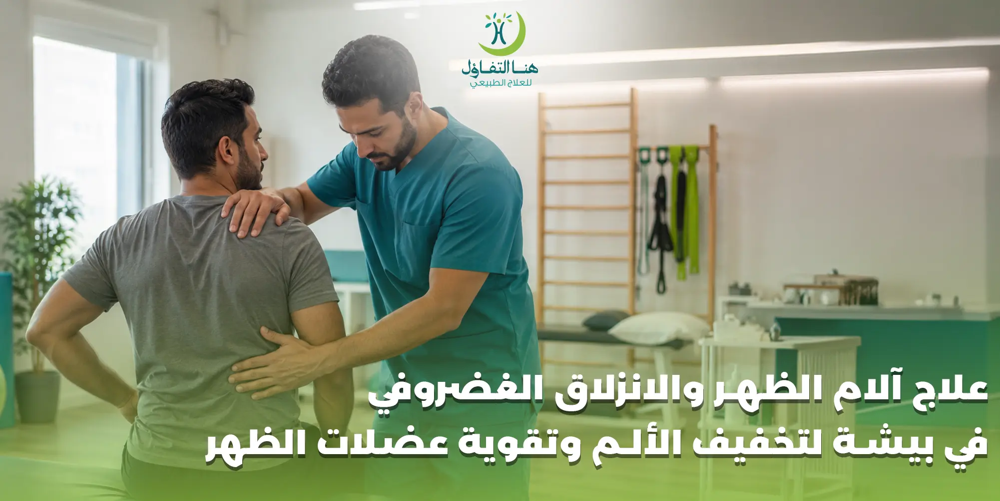

تُعد آلام الظهر والانزلاق الغضروفي من أكثر المشكلات التي يمكن أن تؤثر على الحركة والجلوس والنوم والقدرة على ممارسة الأنشطة اليومية بصورة طبيعية. وقد يبدأ الألم في منطقة أسفل الظهر فقط، بينما يمتد لدى بعض الحالات إلى الأرداف أو الساق، وقد يصاحبه تنميل أو وخز أو ضعف بحسب الأعصاب المتأثرة.
وفي بعض الحالات يمكن التعامل مع آلام الظهر والانزلاق الغضروفي من خلال العلاج التحفظي وبرامج العلاج الطبيعي والتأهيل، بينما تحتاج حالات أخرى إلى تقييم طبي متخصص أو تدخلات إضافية. لذلك فإن الخطوة الأولى ليست اختيار تمرين عشوائي، وإنما تقييم الحالة وتحديد سبب الألم ودرجة تأثير المشكلة على الحركة والأعصاب.
ويقدم هنا التفاؤل في بيشة برامج علاجية وتأهيلية مخصصة لمشكلات الظهر والعمود الفقري، وتشمل آلام أسفل الظهر والانزلاق الغضروفي وعرق النسا والشد العضلي ومشكلات الفقرات، مع التركيز على تحسين الحركة وتخفيف الألم وفق احتياجات كل حالة.
علاج آلام الظهر في بيشة
ألم الظهر ليس حالة واحدة، ولذلك تختلف طريقة التعامل معه من شخص إلى آخر.
فقد يكون الألم مرتبطًا بإجهاد أو شد عضلي، بينما يرتبط في حالات أخرى بمشكلة في الفقرات أو الغضاريف أو المفاصل أو الأعصاب. كما أن بعض الأشخاص يعانون من ألم مؤقت بعد مجهود معين، في حين يعاني آخرون من ألم متكرر يؤثر في حياتهم اليومية.
ولهذا فإن علاج آلام الظهر في بيشة يبدأ بفهم طبيعة الألم ومكانه ومدته والعوامل التي تزيده أو تخففه، ثم تحديد البرنامج الذي يناسب الحالة.
وقد يتضمن البرنامج، بحسب التقييم:
- تمارين علاجية مخصصة.
- تحسين حركة العمود الفقري.
- تقوية العضلات الداعمة للظهر.
- تحسين مرونة العضلات.
- تدريب المريض على الحركة بصورة أكثر أمانًا.
- تعديل بعض العادات التي قد تزيد الضغط على الظهر.
- متابعة تطور الحالة خلال مراحل العلاج.
الانزلاق الغضروفي وآلام أسفل الظهر
يحدث الانزلاق الغضروفي عندما يخرج جزء من الغضروف الموجود بين فقرات العمود الفقري من موضعه الطبيعي، وقد يؤدي ذلك في بعض الحالات إلى تهيج أو ضغط على أحد الأعصاب.
وتختلف الأعراض حسب مكان الانزلاق ودرجة تأثيره.
وقد يشعر المريض بـ:
- ألم في أسفل الظهر.
- ألم يمتد إلى الأرداف أو الساق.
- تنميل أو وخز.
- ضعف في بعض عضلات الطرف السفلي.
- صعوبة في بعض الحركات.
- زيادة الأعراض مع بعض الوضعيات أو الأنشطة.
وتوضح المصادر الطبية أن الانزلاق الغضروفي قد يسبب ألمًا في أسفل الظهر وعرق النسا عندما يؤثر في الأعصاب، كما أن اختيار العلاج يعتمد على الأعراض وشدة الحالة ووجود علامات تستدعي تقييمًا عاجلًا.
علاج الديسك في بيشة بالعلاج الطبيعي والتأهيل
عندما تكون حالة الانزلاق الغضروفي مناسبة للعلاج التحفظي، يمكن أن يكون العلاج الطبيعي والتأهيل جزءًا من خطة التعامل مع الألم وتحسين الحركة.
ولا يعني العلاج الطبيعي أن المريض سيؤدي مجموعة ثابتة من التمارين، بل يتم اختيار التمارين والحركات بناءً على حالة الشخص.
تقليل العوامل التي تزيد الألم
التعرف على الحركات والوضعيات التي تؤدي إلى زيادة الأعراض وتعديلها بصورة مناسبة.
تحسين الحركة
قد يؤدي الألم إلى تجنب الحركة، وهو ما قد يزيد التيبس وضعف العضلات مع الوقت. لذلك يمكن أن يكون استعادة الحركة التدريجية جزءًا من التأهيل.
تقوية العضلات
تساعد العضلات المحيطة بالعمود الفقري والجذع في دعم الحركة، ولذلك قد يتضمن البرنامج تمارين تقوية مناسبة للحالة.
العودة إلى النشاط
الهدف النهائي من التأهيل ليس فقط تقليل الألم أثناء الجلسة، وإنما مساعدة المريض على العودة تدريجيًا إلى أنشطته اليومية وفق قدرته وحالته.
هل يمكن علاج الانزلاق الغضروفي بدون جراحة؟
بعض الحالات يمكن التعامل معها تحفظيًا دون جراحة، لكن لا يمكن القول إن كل حالات الانزلاق الغضروفي تعالج بالطريقة نفسها.
يعتمد القرار على عدة عوامل، منها شدة الأعراض، ومدى تأثير الانزلاق على الأعصاب، ووجود ضعف حركي أو أعراض عصبية، واستجابة الحالة للعلاج.
ملاحظة:
تشير مصادر طبية إلى أن العلاج التحفظي، بما في ذلك العلاج الطبيعي، يستخدم في الحالات التي لا توجد فيها علامات خطورة، بينما تستدعي بعض الحالات تدخلًا طبيًا أو جراحيًا بحسب الأعراض.
لذلك لا ينبغي للمريض أن يتخذ قرار تجنب الجراحة أو اللجوء إليها اعتمادًا على التشخيص وحده، بل بعد تقييم طبي مناسب.
تقوية عضلات الظهر والجذع
ضعف العضلات الداعمة للجذع قد يؤثر على قدرة الجسم على تحمل الأنشطة اليومية، خصوصًا مع الجلوس لفترات طويلة أو قلة النشاط.
ولهذا قد يتضمن برنامج التأهيل تمارين تهدف إلى تحسين قوة عضلات الجذع والظهر والبطن بطريقة تتناسب مع الحالة.
لكن تقوية الظهر لا تعني البدء بأوزان ثقيلة أو تمارين شاقة.
تنبيه:
في حالات الانزلاق الغضروفي، يجب اختيار التمارين بعناية ومراعاة الأعراض، لأن بعض الحركات قد تزيد الألم لدى بعض المرضى. الهدف هو بناء القدرة الحركية تدريجيًا، وليس إجبار الجسم على أداء حركات تفوق قدرته الحالية.
علاج آلام أسفل الظهر
أسفل الظهر من أكثر المناطق تعرضًا للألم بسبب طبيعة الحركة والتحميل اليومي.
وقد ترتبط آلام أسفل الظهر بعوامل متعددة مثل:
- الجلوس لفترات طويلة.
- قلة الحركة.
- الإجهاد العضلي.
- بعض مشكلات الفقرات.
- الانزلاق الغضروفي.
- إصابات أو مجهود بدني.
- بعض المشكلات الأخرى التي تحتاج إلى تقييم طبي.
لذلك لا يُفضل التعامل مع كل ألم في أسفل الظهر على أنه "ديسك". فالتشخيص الصحيح يساعد على اختيار البرنامج المناسب بدل الاعتماد على التخمين.
علاج عرق النسا المصاحب للانزلاق الغضروفي
قد يرتبط الانزلاق الغضروفي في منطقة أسفل الظهر بتهيج العصب الوركي، وهو ما يعرف عادةً باسم عرق النسا.
وقد يشعر المريض بألم يبدأ من أسفل الظهر أو الأرداف ويمتد إلى الساق، وقد يصاحبه تنميل أو وخز.
وتختلف شدة الأعراض من حالة إلى أخرى.
عندما يكون عرق النسا مرتبطًا بمشكلة في العمود الفقري، قد يكون العلاج الطبيعي والتأهيل جزءًا من الخطة العلاجية في الحالات المناسبة، مع ضرورة تقييم الأعراض العصبية.
تنبيه:
في الحالات التي يظهر فيها ضعف متزايد أو أعراض شديدة، يجب الحصول على تقييم طبي سريع.
ألم الظهر الممتد إلى الساق
من العلامات التي تحتاج إلى اهتمام أكبر أن لا يبقى الألم في منطقة الظهر فقط، وإنما يمتد إلى الساق.
وقد يكون الألم مصحوبًا بـ:
- تنميل.
- وخز.
- إحساس بالحرقان.
- ضعف.
- تغير في القدرة على المشي.
وجود هذه الأعراض لا يعني تلقائيًا أن السبب هو الانزلاق الغضروفي، لكنه يجعل التقييم أكثر أهمية.
فالأعراض العصبية تساعد المختص على تحديد مدى تأثر الأعصاب وما إذا كان العلاج الطبيعي مناسبًا للحالة أم أن هناك حاجة إلى تقييم طبي إضافي.
متى تحتاج آلام الظهر إلى تقييم متخصص؟
ليس كل ألم ظهر يحتاج إلى نفس مستوى التدخل، لكن توجد علامات تجعل التقييم المتخصص أكثر أهمية.
ومنها:
- استمرار الألم أو تكراره.
- ألم شديد يؤثر على النوم أو النشاط.
- انتشار الألم إلى الساق.
- ظهور تنميل مستمر.
- ضعف في الساق أو القدم.
- صعوبة متزايدة في المشي.
- الألم بعد إصابة قوية.
- ظهور أعراض جديدة ومفاجئة.
تنبيه هام:
بعض الأعراض العصبية الشديدة تحتاج إلى تقييم طبي عاجل.
أهمية تقييم الحالة قبل جلسات العلاج الطبيعي
قد يعتقد المريض أن أي جلسة علاج طبيعي يمكن أن تناسب آلام الظهر، لكن هذا غير صحيح.
فالبرنامج يعتمد على:
- مكان الألم.
- طبيعة الأعراض.
- مدى الحركة.
- قوة العضلات.
- الأعراض العصبية.
- الهدف من العلاج.
ولهذا يبدأ البرنامج الجيد بتقييم الحالة. وبعد ذلك يمكن تحديد ما إذا كانت الحالة تحتاج إلى تمارين علاجية، أو تأهيل تدريجي، أو تعديل النشاط، أو إحالة طبية لمزيد من الفحوصات.
يذكر موقع هنا التفاؤل أن برامجه العلاجية تعتمد على تقييم الحالة ووضع خطة علاجية مخصصة وفق احتياجات المراجع وأهدافه.
العلاج الطبيعي لآلام الظهر
قد يشمل العلاج الطبيعي لآلام الظهر مجموعة من التدخلات التي يتم اختيارها حسب الحالة.
التمارين العلاجية
تساعد على تحسين الحركة والقوة والتحمل وفق قدرة المريض.
تمارين المرونة
قد تستخدم لتحسين حركة بعض العضلات والمفاصل عندما تكون المرونة جزءًا من المشكلة.
تدريب الحركة
يساعد المريض على أداء بعض الحركات اليومية بطريقة أكثر ملاءمة.
تقوية عضلات الجذع
يمكن أن تكون جزءًا من برنامج التأهيل عند ملاءمتها للحالة.
التثقيف الحركي
يتعلم المريض بعض العادات التي تساعده على التعامل مع الظهر خلال العمل والنوم والحركة اليومية.
آلام الظهر بسبب الجلوس الطويل
الجلوس لفترات طويلة قد يكون أحد العوامل التي تزيد شعور بعض الأشخاص بألم أو تيبس أسفل الظهر.
خصوصًا عندما يجلس الشخص لساعات دون تغيير وضعية أو حركة.
ولهذا يمكن الاهتمام ببعض العادات مثل:
- • تغيير وضعية الجلوس باستمرار.
- • أخذ فترات قصيرة للحركة.
- • ضبط ارتفاع الكرسي.
- • وضع الشاشة في مستوى مناسب عند العمل.
- • تجنب البقاء في وضعية واحدة لساعات.
لكن إذا كان الألم مستمرًا أو مصحوبًا بأعراض تمتد إلى الساق، فلا ينبغي الاكتفاء بتعديل الجلسة دون تقييم.
آلام الظهر والعمل المكتبي
الأشخاص الذين يعملون أمام الكمبيوتر لفترات طويلة قد يشعرون بتيبس أو ألم في أسفل الظهر نتيجة قلة الحركة والبقاء في وضعية واحدة.
ولا يعني ذلك أن الجلوس هو السبب الوحيد لكل آلام الظهر، لكنه قد يكون عاملًا يزيد الأعراض لدى بعض الأشخاص.
ولهذا فإن الحركة خلال يوم العمل جزء مهم من العناية بالظهر. كما أن إعادة تنظيم بيئة العمل قد تساعد على تقليل الإجهاد الناتج عن الوضعيات غير المناسبة.
آلام الظهر عند رفع الأشياء
طريقة رفع الأشياء قد تؤثر على الضغط الواقع على الظهر، خصوصًا عندما يتم رفع وزن كبير بصورة مفاجئة أو مع حركة غير مناسبة.
ويُفضل عند التعامل مع الأوزان:
- • تقدير قدرة الجسم على حمل الوزن.
- • تجنب الحركات المفاجئة.
- • توزيع الحمل بصورة مناسبة.
- • استخدام طريقة رفع آمنة.
- • عدم الاستمرار في الحركة إذا ظهر ألم حاد.
أما إذا ظهر ألم شديد بعد رفع وزن أو حدثت إصابة، فقد يحتاج الشخص إلى تقييم طبي لتحديد طبيعة المشكلة.
العلاج الطبيعي بعد نوبات ألم الظهر
بعد تحسن الألم الحاد، قد يركز البرنامج التأهيلي على العودة التدريجية إلى النشاط.
فالهدف ليس فقط أن يختفي الألم، وإنما أن يستعيد الشخص قدرته على الحركة وأداء الأنشطة اليومية بصورة أفضل.
وقد يشمل ذلك زيادة النشاط بصورة تدريجية، وتقوية العضلات وتحسين الحركة وفق خطة مناسبة للحالة.
والعودة السريعة إلى مجهود شديد قد لا تكون مناسبة لجميع الحالات، لذلك يجب اتباع توصيات المختص.
الانزلاق الغضروفي والراحة الطويلة
قد يعتقد بعض الأشخاص أن الراحة التامة لفترات طويلة هي الحل الأفضل للانزلاق الغضروفي، لكن التعامل مع الحالات يختلف حسب شدة الأعراض.
في الحالات المناسبة، تكون العودة التدريجية إلى الحركة جزءًا مهمًا من العلاج التحفظي، بينما تحتاج بعض الحالات الحادة إلى تقليل النشاط لفترة يحددها المختص.
لذلك لا يفضل اتخاذ قرار الراحة التامة أو العودة إلى النشاط الشديد دون معرفة طبيعة الحالة.
العودة إلى الحركة بعد ألم الظهر
الخوف من الحركة قد يجعل بعض الأشخاص يتجنبون النشاط لفترات طويلة، لكن الهدف في برامج التأهيل المناسبة هو الوصول تدريجيًا إلى مستوى حركة أفضل.
وقد تبدأ الخطة بحركات بسيطة، ثم تتطور تدريجيًا حسب استجابة الجسم.
وتتمثل الفكرة في:
- • حركة مناسبة.
- • زيادة تدريجية في القدرة.
- • تقوية أفضل.
- • عودة أكثر أمانًا للنشاط.
ولا يعني ذلك أن المريض يجب أن يتحمل الألم الشديد أثناء التمرين؛ بل يتم تعديل البرنامج بحسب الأعراض.
تأهيل العمود الفقري في بيشة
يحتاج تأهيل العمود الفقري إلى خطة تراعي طبيعة المشكلة، سواء كانت آلامًا ميكانيكية في الظهر أو مشكلة مرتبطة بالغضاريف أو ضعفًا عضليًا أو حالة بعد إجراء طبي.
وتشمل خدمات هنا التفاؤل برامج مخصصة لمشكلات الظهر والعمود الفقري، بما فيها آلام أسفل الظهر والانزلاق الغضروفي وعرق النسا والشد العضلي ومشكلات الفقرات.
ويتم اختيار البرنامج وفق تقييم الحالة واحتياجات المراجع.
علاج الانزلاق الغضروفي في بيشة حسب حالة المريض
لا يمكن تحديد برنامج واحد لجميع حالات الديسك.
فقد يكون المريض قادرًا على الحركة بصورة جيدة مع وجود ألم، بينما يعاني مريض آخر من ألم ممتد وتنميل أو ضعف.
ولهذا فإن البرنامج قد يختلف في:
- نوع التمارين.
- مستوى شدة التمرين.
- عدد الجلسات.
- سرعة التدرج.
- الأنشطة التي يجب تجنبها مؤقتًا.
- مستوى المتابعة.
وهذا الاختلاف طبيعي لأن العلاج يجب أن يتناسب مع الحالة وليس مع اسم التشخيص فقط.
هل كل انزلاق غضروفي يحتاج إلى عملية؟
لا.
وجود انزلاق غضروفي في الأشعة لا يعني تلقائيًا أن المريض يحتاج إلى تدخل جراحي.
فالقرار يعتمد على الأعراض ودرجة تأثير المشكلة على الأعصاب والاستجابة للعلاج وغير ذلك من العوامل الطبية.
وفي المقابل، لا ينبغي أيضًا افتراض أن العلاج الطبيعي مناسب لكل حالة دون تقييم، خصوصًا عند وجود ضعف عصبي متزايد أو علامات خطورة.
ولهذا فإن التشخيص والتقييم الطبي الصحيحين يسبقان اتخاذ القرار العلاجي.
علامات تستدعي التوجه للطبيب بسرعة
هناك أعراض لا ينبغي معها تأجيل التقييم الطبي، ومنها:
- ضعف مفاجئ أو متزايد في الساق.
- فقدان السيطرة على البول أو البراز.
- خدر في منطقة العانة أو ما حولها.
- ألم شديد بعد إصابة قوية.
- أعراض عصبية شديدة أو متفاقمة.
- صعوبة متزايدة في المشي.
تنبيه هام:
هذه العلامات قد تشير إلى حالات تحتاج إلى تقييم طبي عاجل، ولا ينبغي التعامل معها على أنها مجرد شد عضلي عادي.
دور المريض في نجاح برنامج العلاج
نجاح البرنامج لا يعتمد على الجلسات فقط.
فالتزام المريض بالتعليمات التي يحصل عليها من المختص قد يكون جزءًا مهمًا من رحلة التأهيل.
ومن الأمور التي تساعد على تنظيم البرنامج:
- • الالتزام بمواعيد الجلسات.
- • تنفيذ التمارين المنزلية الموصى بها.
- • تجنب الحركات التي تم التنبيه عليها.
- • إبلاغ المختص بأي تغير في الأعراض.
- • العودة إلى النشاط بصورة تدريجية.
- • المحافظة على العادات الحركية المناسبة.
وتشير هنا التفاؤل إلى أهمية الالتزام بالخطة العلاجية والمتابعة المنتظمة للوصول إلى الأهداف العلاجية بصورة أفضل.
هل يمكن منع تكرار آلام الظهر؟
لا يمكن ضمان منع جميع نوبات ألم الظهر، لكن بعض العادات قد تساعد على تقليل العوامل التي تزيد المشكلة لدى بعض الأشخاص.
الحفاظ على النشاط
الحركة المنتظمة أفضل من الخمول لفترات طويلة.
تقوية العضلات
الحفاظ على قوة مناسبة لعضلات الجذع والظهر يساعد على دعم الحركة.
تنظيم الجلوس
تجنب الجلوس لساعات دون تغيير الوضعية.
رفع الأشياء بطريقة مناسبة
تجنب الحركات المفاجئة والأوزان التي تتجاوز القدرة.
الاهتمام بالوزن ونمط الحياة
النشاط البدني ونمط الحياة الصحي يساعدان في دعم الصحة العامة والحركة.
علاج آلام الظهر وتحسين جودة الحياة
قد يؤثر ألم الظهر على تفاصيل تبدو بسيطة في الحياة اليومية، مثل:
- الجلوس.
- النوم.
- القيادة.
- صعود الدرج.
- المشي.
- الانحناء.
- حمل الأشياء.
- ممارسة الرياضة.
ولهذا فإن الهدف من العلاج لا يقتصر على تقليل درجة الألم، بل يمتد إلى استعادة القدرة على الحركة والعودة إلى الأنشطة اليومية بصورة أفضل.
وهذا هو السبب في أهمية برامج التأهيل التي تركز على الوظيفة والحركة وليس الألم وحده.
لماذا تختلف مدة العلاج من حالة إلى أخرى؟
لا توجد مدة ثابتة لجميع مرضى آلام الظهر أو الانزلاق الغضروفي.
فقد تتحسن بعض الحالات خلال فترة قصيرة، بينما تحتاج حالات أخرى إلى برنامج أطول بسبب شدة الأعراض أو وجود ضعف في الحركة أو استمرار المشكلة لفترة طويلة.
كما تعتمد مدة البرنامج على:
- طبيعة المشكلة.
- شدة الأعراض.
- مستوى الحركة.
- الاستجابة للعلاج.
- الالتزام بالبرنامج.
- وجود أعراض عصبية.
- الهدف النهائي من التأهيل.
لذلك من الأفضل عدم مقارنة مدة علاجك بمدة علاج شخص آخر.
أسئلة شائعة عن علاج آلام الظهر والانزلاق الغضروفي في بيشة
احجز استشارتك في مركز هنا التفاؤل ببيشة
إذا كنت تعاني من آلام أسفل الظهر أو أعراض الانزلاق الغضروفي أو عرق النسا أو صعوبة في الحركة، فلا تؤجل التقييم. يساعد التشخيص المبكر على وضع خطة علاجية مناسبة قد تساهم في تخفيف الألم وتحسين الحركة وتقوية العضلات.